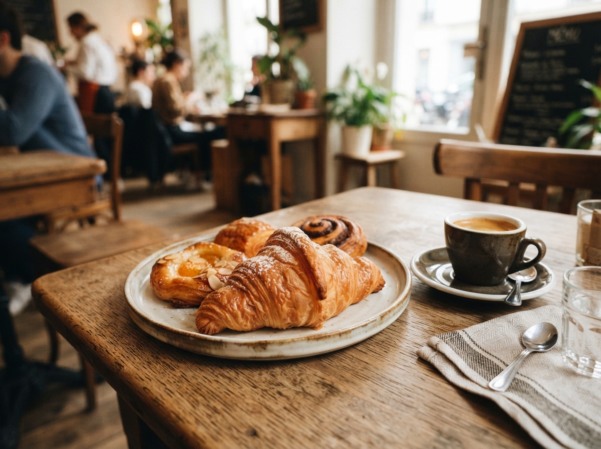

Single Origin
Hand-poured single origins, calibrated micro-lot roasts, and seasonal botanical espresso elixirs pulled on our custom Synesso MVP machine.
From single-origin farm-gate roasts to private sensory cupping sessions, explore how we craft thoughtful culinary, botanical, and hospitality experiences for our Portland community.
Hand-poured single origins, calibrated micro-lot roasts, and seasonal botanical espresso elixirs pulled on our custom Synesso MVP machine.

Flaky cultured-butter croissants, cardamom knots, and pistachio rose canelés baked fresh every dawn in our stone hearth roastery oven.

Organic avocado tartines with microgreens, soft-poached farm eggs, seasonal whipped ricotta bowls, and citrus-dressed brioche.

Exclusive greenhouse courtyard reservations for acoustic soirees, mindful corporate offsites, book launches, and celebratory botanical brunches.

Bi-weekly or monthly whole-bean deliveries from Oaxaca and Sidama, complete with roast date cards, tasting notes, and dialed grind guides.

Intimate 2-hour weekend workshops exploring extraction dynamics, water mineral density, milk microfoam texturing, and latte art mechanics.
Four foundational pillars that elevate every sip and bite in our atelier.
We pay 45% above Fair Trade minimums directly to micro-lot growers across Oaxaca, Huila, and Sidama.
Every bean is roasted twice weekly in our vintage 1962 cast-iron drum roaster for maximum aromatic clarity.
Over forty species of air-purifying tropical botanicals cultivate a serene indoor microclimate.
Used grounds, chaff, and food scraps are composted daily in Portland community botanical gardens.